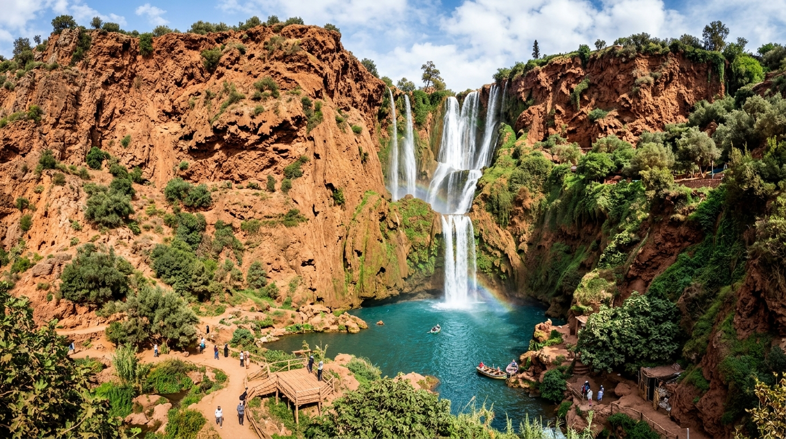
"One of the most beautiful places I've ever visited! The waterfalls and the atmosphere were incredible. The fresh mint tea at the base was pure bliss."
Your journey starts here. Explore breathtaking places, live authentic experiences and support local communities.
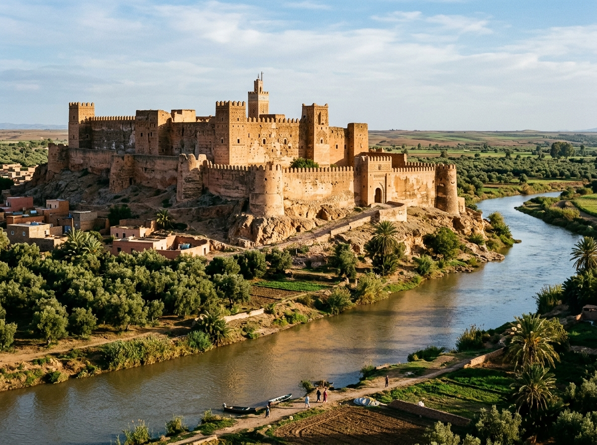
Historical Kasbah Béni MellalImposing military fortress built under Sultan Moulay Ismail on the trans-Atlas trading route, featuring massive double adobe ramparts, stone bastions, and two historic mosques overlooking the Oum Er-Rbia river.
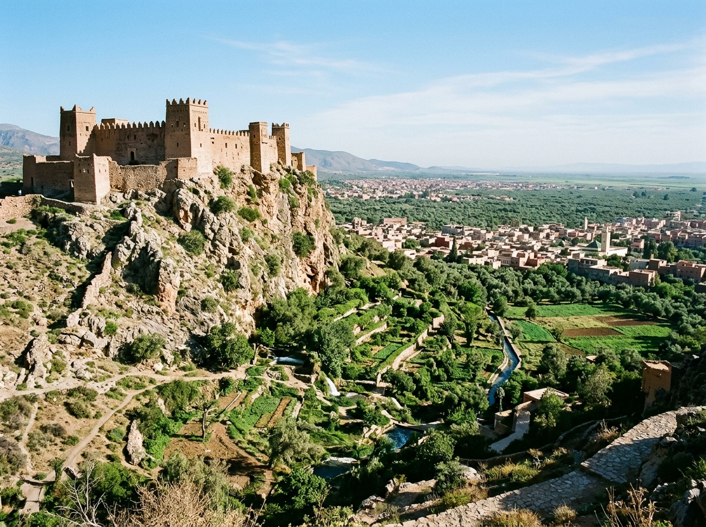
Historical Kasbah Béni MellalIconic stone and earthen stronghold perched high upon the rocky limestone crest above the Ain Asserdoun freshwater spring, historically constructed as a defensive sentinel over the city and the vast olive orchards.
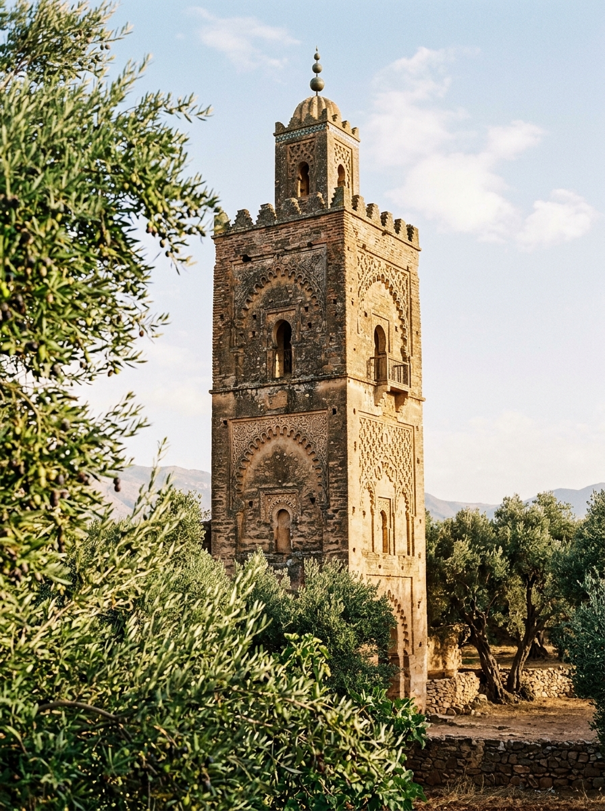
Ancient Architecture Béni MellalHistoric solitary minaret erected with fired brick and dressed stone, decorated with geometric blind arches. It remains the oldest standing Islamic architectural monument in the urban territory of Béni Mellal.
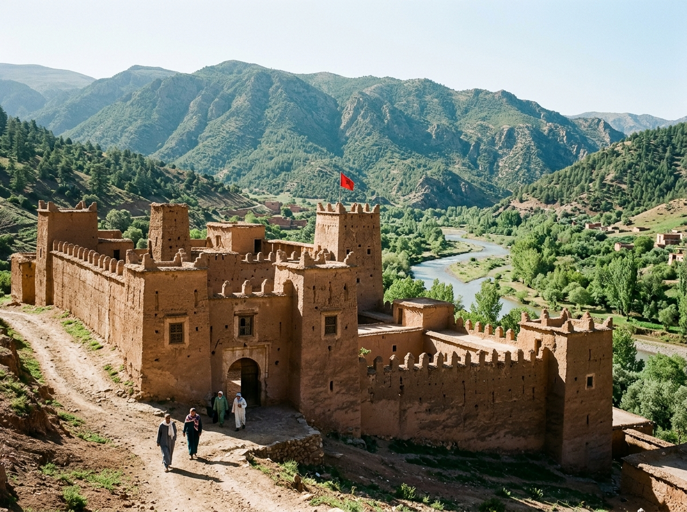
Historical Kasbah KhénifraHistorical headquarters and residence of the renowned Zayan resistance chieftain Moha ou Hammou Zayani, symbolizing the epic defense of the Middle Atlas mountains during the Battle of El Herri.
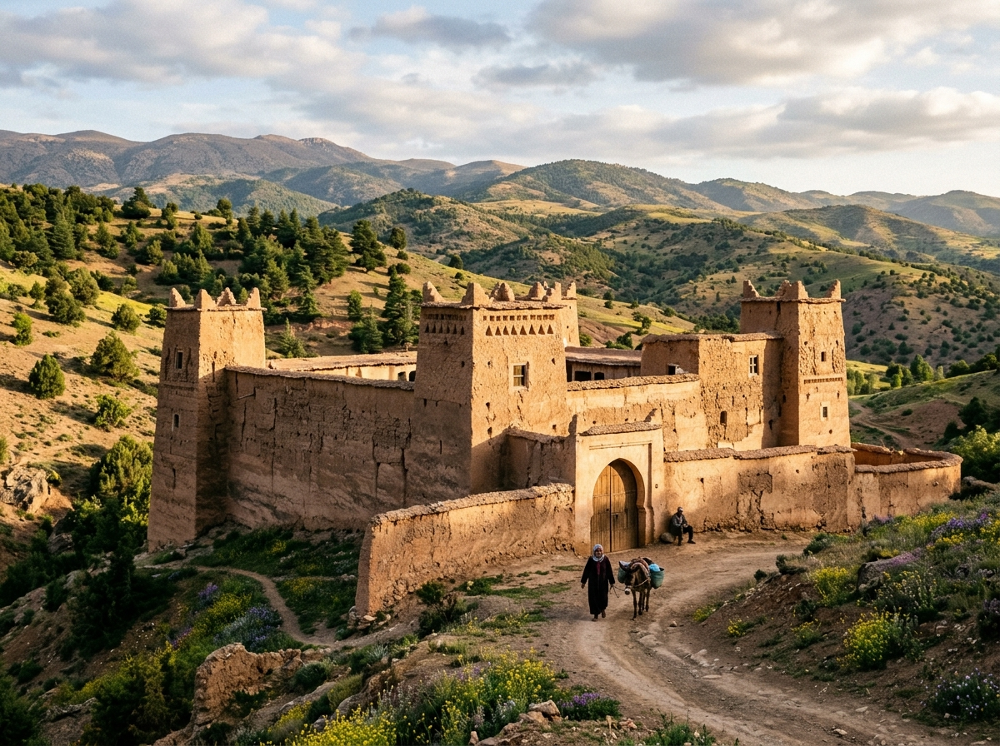
Historical Kasbah KhénifraStriking rural fortress erected on an elevated strategic promontory, displaying classic Amazigh stepped ramparts, corner watchtowers, and thick earthen walls that protected mountain pastoralist routes.
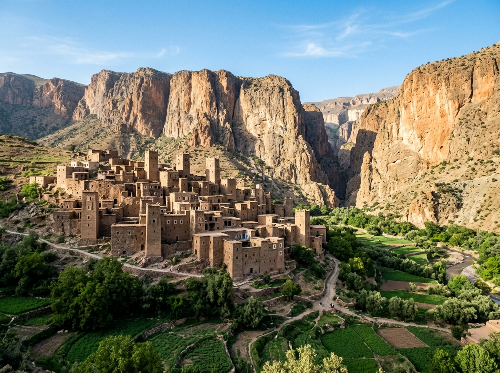
Historical Kasbah AzilalRenowned religious zaouia settlement and fortified stone ksar nestled beneath towering limestone massifs, preserving centuries of spiritual scholarship, tribal mediation, and dramatic High Atlas masonry.
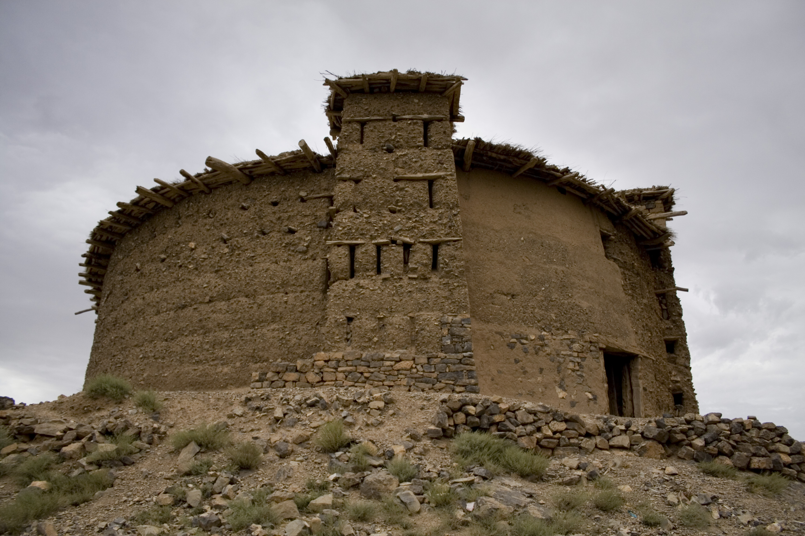
Traditional Heritage AzilalMonumental fortified collective granary built of river stone, clay pisé, and juniper beams. Each local family maintained a locked wooden vault inside to store grain reserves, oil, and title deeds during mountain feuds.
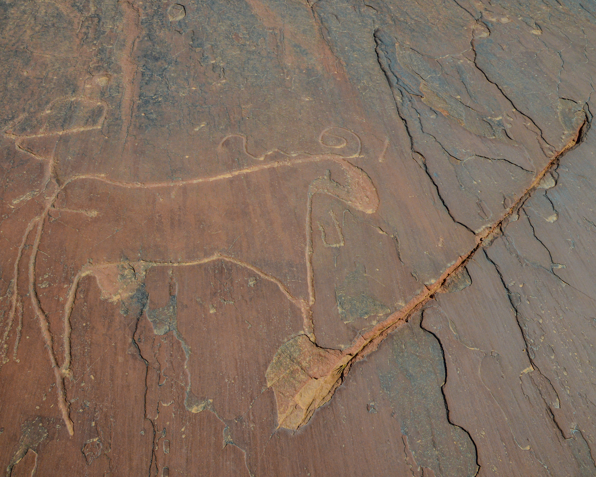
Rock Engravings AzilalPioneering high-altitude open-air archaeological site featuring smooth sandstone slabs pecked with Bronze Age iconography: circular ceremonial shields, metal daggers, halberds, horned oxen, and warriors.
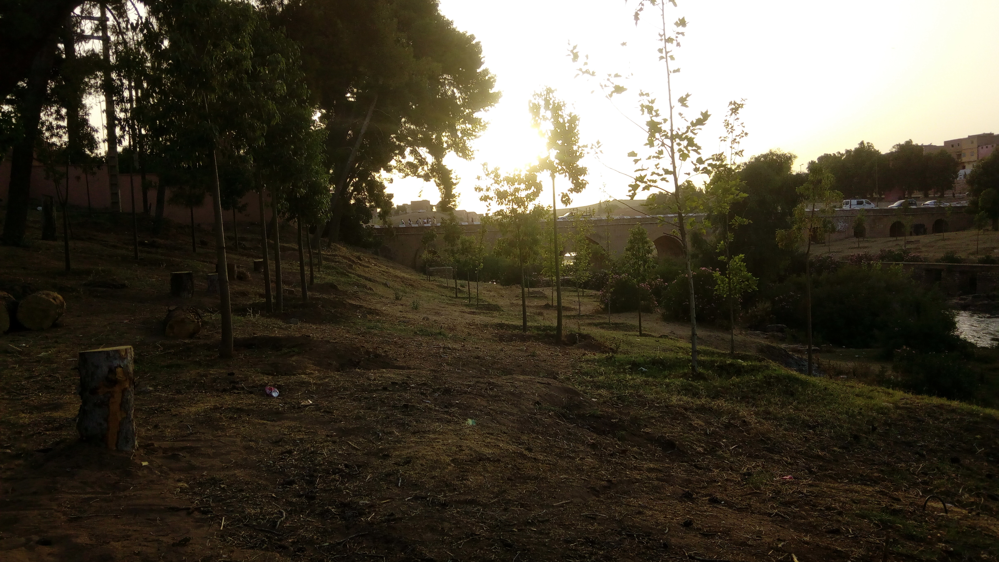
Ancient Architecture Khénifra RegionMajestic multi-arch dressed limestone bridge spanning Morocco's primary river. Attributed to the building campaign of Sultan Moulay Ismail, it served as the vital commercial crossing between northern cities and southern oases.
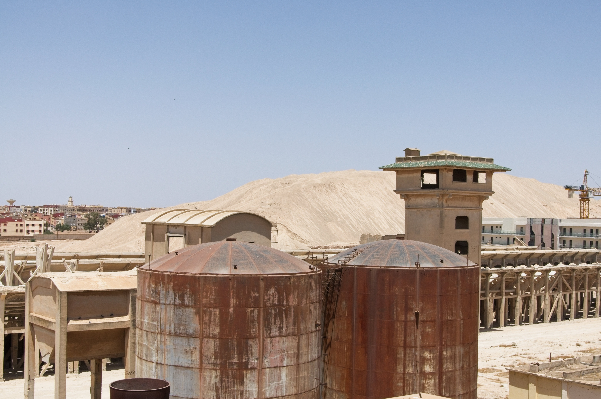
Museum KhouribgaPremier national museum exhibiting the industrial legacy of Morocco's phosphate basin alongside an extraordinary collection of marine paleontological fossils (Mosasaur, crocodile, and shark teeth) dating back 70 million years.
Follow a curated historic journey through imperial citadels, sacred zaouias, and prehistoric rock art across the four historic provinces of Béni Mellal-Khénifra.
Walk through the imposing 17th-century adobe bastions and discover the historic Moulay Ismail imperial fortress guarding the trans-Atlas gateway.
Alaouite CitadelAscend to clifftop Kasbah Belkouch overlooking the Ain Asserdoun spring and explore the ancient medieval Soumâa minaret nestled in century-old olive groves.
Springs & MinaretJourney into the High Atlas to the sacred Kasbah Zaouit Ahansal, the communal Amezraï granary, and the Bronze Age rock engravings of Tizi n'Tirghist.
Granaries & Rock ArtUncover the heroic Amazigh resistance at Kasbah Moha Ou Hammou Zayani, visit Kasbah Adekhssal, and marvel at the historic stone bridge over the Oum Er-Rbia.
Zayan Strongholds
A charming single-day immersion discovering lush water gardens and the vibrant historic medina.
Experience the majesty of Ouzoud waterfalls followed by a peaceful lakeside escape at Bin El Ouidane.
The ultimate cultural trek through the Happy Valley, ancient granaries, and majestic mountain peaks.
Select your target budget and preferences to generate a custom itinerary in seconds.

Visit Cascades d'Ouzoud.
Explore the Atlas Mountains.
Discover traditional Moroccan food.
Participate in a local cultural activity.
Complete an eco-tourism activity.
Discover 5 hidden destinations.

"One of the most beautiful places I've ever visited! The waterfalls and the atmosphere were incredible. The fresh mint tea at the base was pure bliss."

"A peaceful escape surrounded by breathtaking mountains. Definitely coming back! The crystal-clear turquoise water at sunset is truly unforgettable."

"Discovering Amazigh culture and meeting local families made this trip unforgettable. Staying at an eco-guesthouse gave us memories for a lifetime."